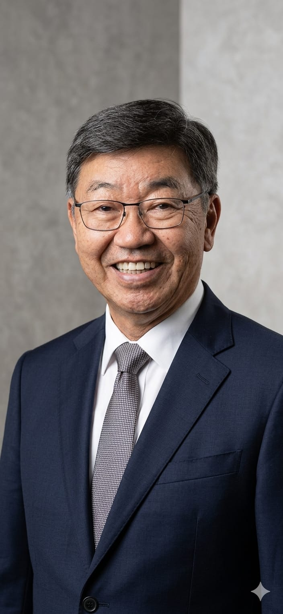

A distância entre um fornecedor comum e um parceiro estratégico é a profundidade com que ele entende a sua operação.
Liderança com Visão de Dono
Cada membro da nossa liderança traz uma perspectiva única: a de quem operou, contratou e cobrou resultados de facilities antes de fornecê-los.
Ex-Gerente Regional de Operações de Postos
Com mais de 7 anos à frente da Gerência Regional de Operações e Vendas de Postos e Drogarias em uma das maiores redes varejistas do mundo (Carrefour), Tatisa liderou o Projeto Lean para otimizar e automatizar a operação de postos, vencendo o prêmio Global do Digital Finance Awards.
Essa vivência de quem esteve do outro lado da mesa garante que a FTmaster fale a língua do Facility Manager: foco na continuidade das vendas, antecipação de problemas e entrega precisa sem retrabalho.

Diretor de Operações e Integração
Sérgio construiu uma carreira executiva sólida no setor automotivo multinacional (Sodecia Automotive Europa), atuando como Diretor de Restruturação, Diretor de Sistema da Qualidade e Diretor de Manufatura. Ele traz o rigor da engenharia industrial para o varejo.
A abordagem sistemática de montadoras de veículos se traduz na FTmaster em processos milimétricos, indicadores rastreáveis e conformidade total. Da qualidade da execução à entrega dos laudos finais, tudo segue o mais alto rigor técnico.
"Nós não vendemos serviço de manutenção. Nós entregamos continuidade de negócios com segurança jurídica — porque já estivemos do lado de quem cobra isso."— Diretoria FTmaster
Por que isso importa
Definimos exatamente o que precisa ser feito — sem itens desnecessários, sem omissões que causam retrabalho.
Falamos a linguagem do Facility Manager: SLA, APR, PT, AVCB — sem tradução, sem ruído operacional.
Quem já gerenciou postos sabe que agilidade não é diferencial — é pré-requisito para a continuidade operacional.
Próximo passo
Solicite um diagnóstico digital e veja como nossa liderança se traduz em resultado mensurável para a sua rede.